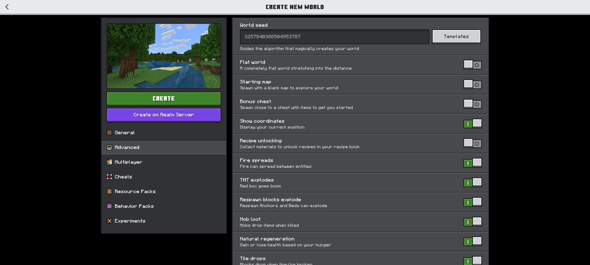
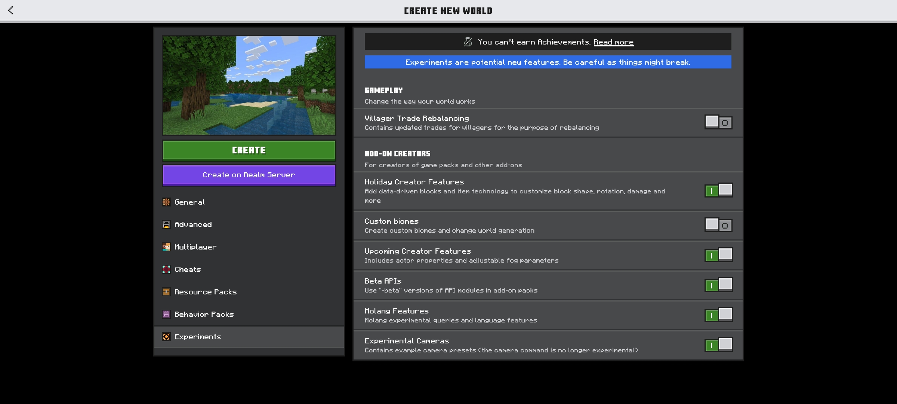

Zxra Creation
Zxra Creation
Apa itu Better Zxra Bedrock?
Better Zxra Bedrock (BZB) adalah addon pack buatan Zxra Creation yang berisi tentang item, senjata, mekanik, armor dan entitas yang akan menyusahkan user. Ini bertipe RPG dan terdapat beberapa mekanik baru yang akan menjadi beban kalian.
Untuk kedepannya kami akan lebih banyak menambahkan fitur-fitur yang kalian saran kan(tetapi lebih ke fitur yang menyulitkan pemain aja).
Untuk itu kami membuka saran dari kalian
Genre: RPG, Economy
Progress bar untuk pembaruan berikutnya
Apa Yang Baru?
hapus addon lama karena kita terlalu malas untuk mengganti uuid setiap addon
Klik ini untuk melihat detailnya
Download
Catatan pembuatan Dunia
Berikut beberapa catatan dalam membuat world dengan addon ini
 Untuk beberapa update berikutnya kita akan menambahkan 3RD Support Party untuk kalian. Dengan begitu kalian juga bisa membuat addon kalian dengan mekanik dari addon ini
Versi Minecraft untuk module ini ikut dengan versi Addonnya
Zxra Api | Zxra Creation | V1.8.3 | Unduh
Zxra Wtft | Zxra Creation | V1.0.5 | Unduh